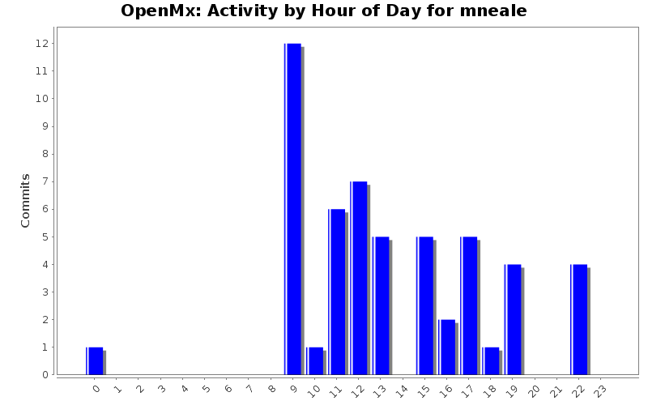
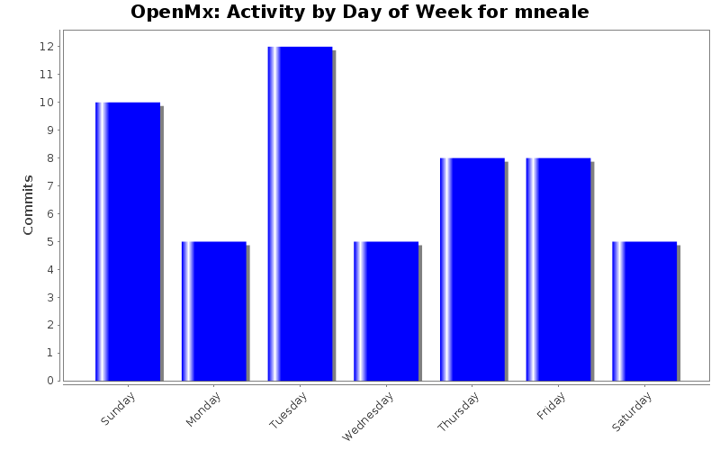
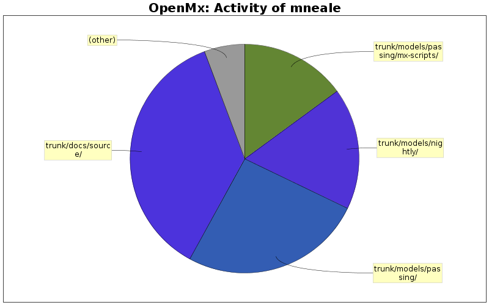

| Directory | Changes | Lines of Code | Lines per Change |
|---|---|---|---|
| Totals | 53 (100.0%) | 2377 (100.0%) | 44.8 |
| trunk/docs/source/ | 13 (24.5%) | 865 (36.4%) | 66.5 |
| trunk/models/passing/ | 16 (30.2%) | 613 (25.8%) | 38.3 |
| trunk/models/nightly/ | 5 (9.4%) | 409 (17.2%) | 81.8 |
| trunk/models/passing/mx-scripts/ | 6 (11.3%) | 355 (14.9%) | 59.1 |
| trunk/models/failing/ | 3 (5.7%) | 53 (2.2%) | 17.6 |
| trunk/src/ | 3 (5.7%) | 42 (1.8%) | 14.0 |
| trunk/models/failing/mx-scripts/ | 3 (5.7%) | 25 (1.1%) | 8.3 |
| trunk/R/ | 1 (1.9%) | 14 (0.6%) | 14.0 |
| trunk/ | 1 (1.9%) | 1 (0.0%) | 1.0 |
| trunk/models/ | 2 (3.8%) | 0 (0.0%) | 0.0 |

Added chol function & tests and dialed down precision on test IntroSEM-ThreeLatentMultipleRegTest2.R
50 lines of code changed in 5 files:
added RegimeSwitching script which takes ~4 minutes in front end
210 lines of code changed in 1 file:
Fixed joint ordinal-continuous bug if thresholds are result of mxAlgebra
9 lines of code changed in 1 file:
Fixed number of variables (from 3 to 8) in thresholdModel1Factor8Variate.R
1 lines of code changed in 1 file:
Deleting unrepeatable threshold example, adding 3 repeatables: 3, 5 & 8 variables
198 lines of code changed in 4 files:
Adding thresholdModelSizeableExample.R - 8 vars, takes my mbp ~15mins
0 lines of code changed in 1 file:
Adding latent class analysis example; an ordinal mixture distribution
212 lines of code changed in 2 files:
Adding ABOBloodGroups.rst
135 lines of code changed in 1 file:
Added direct likelihood example: one and two-locus models & Mx1 scripts
82 lines of code changed in 4 files:
Adding corresponding Mx 1.0 scripts for mixture distribution examples
120 lines of code changed in 2 files:
Adding Acemix2.R - definition variable example of mixture distribution
142 lines of code changed in 3 files:
Cleaning up some formerly failing scripts
0 lines of code changed in 2 files:
Adding passing/acemix.R, probabilistic zygosity diagnosis example using FIML mixture distribution
113 lines of code changed in 4 files:
added trunk/models/failing/UnivariateTwinAnalysisModerated_Matrix.R which has same parameter estimates but different -2lnL c/w Mx1 version in mx-scripts
43 lines of code changed in 2 files:
Minor dits to FactorModelPath.rst and DefinitionMeansPath.rst
3 lines of code changed in 2 files:
Added figure to DefinitionMeans_Path.rst
11 lines of code changed in 2 files:
Documentation for DefinitionMeansPath
135 lines of code changed in 1 file:
Adding Pathic Definition Variable example
113 lines of code changed in 1 file:
Adding DefinitionMeans.R .mx and .rst files
248 lines of code changed in 3 files:
Edited DefinitionTest2.R
0 lines of code changed in 1 file:
(6 more)